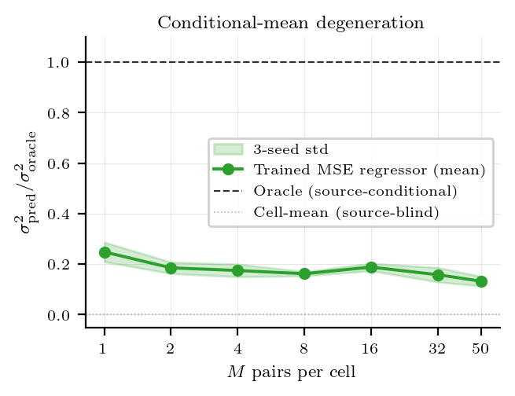
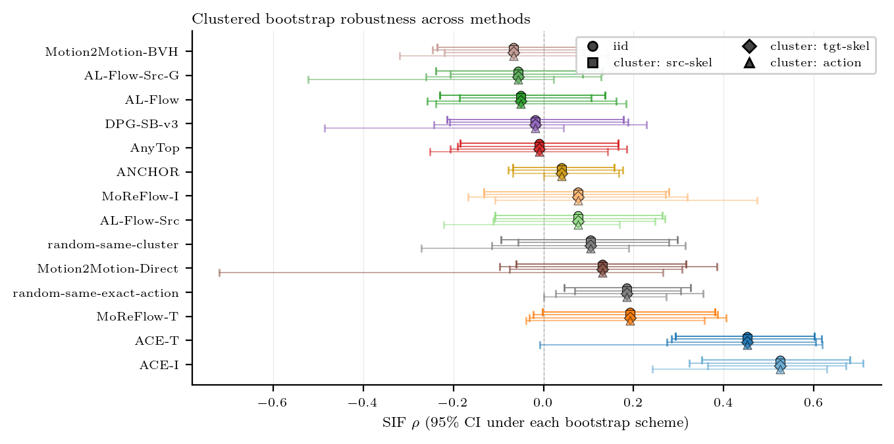

Gauge Non-Identifiability
Unpaired marginal matching leaves a relative gauge between skeleton-specific latent spaces, so different source-conditioned maps can induce the same training evidence.
NeurIPS 2026 submission
Structural Limits of Generative Motion Models
Action-consistent target motion can be produced by source-preserving transfer or by target-action recovery. Standard objectives and scores cannot distinguish these maps.
Cross-skeleton motion generation trains generative models to carry action structure and motion intention from one body to another. Yet an action-consistent target motion admits two observationally compatible explanations: source-preserving transfer and target-action recovery.
We show that this ambiguity is structural rather than incidental: under standard generative objectives, the source-conditioned retargeting map is non-identifiable in sparse heterogeneous motion domains. Unpaired marginal matching yields gauge non-identifiability, while sparse paired supervision admits conditional-mean degeneration toward target-action prototypes.
To make the missing evidence observable, we introduce Source-Instance Fidelity, a diagnostic that tests whether the source-side geometry remains visible in generated target motions after the target skeleton and action are fixed.
Unpaired marginal matching leaves a relative gauge between skeleton-specific latent spaces, so different source-conditioned maps can induce the same training evidence.
With random target-cell pairing, squared-error supervision can collapse toward an action-conditioned target prototype instead of preserving the motion intention of the source clip.

Source-Instance Fidelity measures whether source-side differences are reflected in target-side outputs once action and target skeleton are fixed. This diagnostic exposes when a model has recovered the action without identifying the retargeting map.


The videos show the same diagnostic tension visually: generated target motions can satisfy the requested action while losing the source-specific motion intention that a retargeting claim requires.
Side-by-side outputs across evaluated methods on representative cross-skeleton queries.
Examples where action-consistent target motion does not preserve the source clip's motion intention.


This page is prepared for anonymous review. The citation entry will be updated with author and venue metadata after the review process.
@inproceedings{anonymous2026crossskeleton,
title = {Why Cross-Skeleton Retargeting Is Non-Identifiable:
Structural Limits of Generative Motion Models},
author = {Anonymous Authors},
booktitle = {Submitted to NeurIPS},
year = {2026}
}